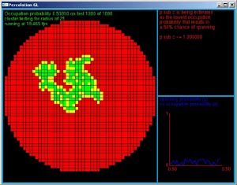
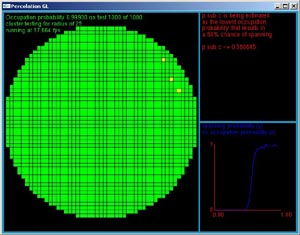
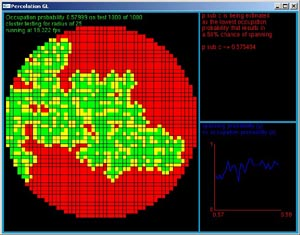

This program was written for a modelling and simulations class. The program simulates percolation cluster formation and calculates spanning probability for a given radius. The program is written in ANSI C and uses GLUT for graphics in order to maximize cross system compatability.
complete source - percolationgl.c
  